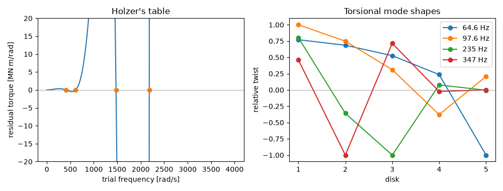

Note
Go to the end to download the full example code or to run this example in your browser via JupyterLite.
Holzer’s method for torsional vibration (1921)#
Diesel engines, ship propellers and generators share long shafts that
can twist resonantly, and a crankshaft that does so breaks. Heinrich Holzer
(1921) found their natural frequencies with a table instead of a
determinant. Guess a frequency, give the first disk unit twist, and march
along the shaft. Each disk adds an inertia torque \(J_i\omega^2\theta_i\),
and each shaft twists by the accumulated torque over its stiffness. At a
natural frequency the torque left over beyond the free end is zero
(holzer_residual(),
holzer_frequencies()). The
example checks Holzer’s frequencies against the eigenvalues of the
stiffness and inertia matrices.
import matplotlib.pyplot as plt
import numpy as np
from scipy.linalg import eigh
from engineeringkit.mechanical_engineering import holzer_frequencies, holzer_residual
An engine, flywheel and generator#
Three cylinders, a flywheel and a generator rotor on one shaft line.
J = np.array([0.8, 0.8, 0.8, 6.0, 3.0]) # kg m^2
K = np.array([1.2e6, 1.2e6, 0.9e6, 0.4e6]) # N m/rad
result = holzer_frequencies(J, K, omega_max=4000.0)
for w, shape in zip(result.frequencies, result.mode_shapes):
print(f"{w:8.2f} rad/s = {w / (2 * np.pi):7.2f} Hz, mode {np.round(shape, 3).tolist()}")
405.90 rad/s = 64.60 Hz, mode [0.771, 0.686, 0.526, 0.236, -1.0]
613.41 rad/s = 97.63 Hz, mode [1.0, 0.749, 0.31, -0.378, 0.208]
1473.91 rad/s = 234.58 Hz, mode [0.802, -0.359, -1.0, 0.077, -0.005]
2182.10 rad/s = 347.29 Hz, mode [0.46, -1.0, 0.714, -0.024, 0.001]
Against the matrix eigenvalue problem#
The same chain gives \(K\theta = \omega^2 J\theta\) with a tridiagonal stiffness matrix; dropping the zero rigid-body root leaves Holzer’s list.
stiffness = np.zeros((J.size, J.size))
for i, ki in enumerate(K):
stiffness[i : i + 2, i : i + 2] += ki * np.array([[1, -1], [-1, 1]])
eigenvalues, vectors = eigh(stiffness, np.diag(J))
exact = np.sqrt(eigenvalues[1:])
print("matrix eigenvalues [rad/s]:", np.round(exact, 2).tolist())
assert np.allclose(result.frequencies, exact, rtol=1e-9)
for shape, vector in zip(result.mode_shapes, vectors[:, 1:].T):
assert np.isclose(abs(np.dot(shape, vector)) / (np.linalg.norm(shape) * np.linalg.norm(vector)), 1)
print(result.summary())
fig, axes = plt.subplots(1, 2, figsize=(10, 3.8))
w = np.linspace(1, 4000, 4000)
axes[0].plot(w, holzer_residual(w, J, K) / 1e6)
axes[0].plot(result.frequencies, 0 * result.frequencies, "o")
axes[0].axhline(0, color="gray", lw=0.5)
axes[0].set(xlabel="trial frequency [rad/s]", ylabel="residual torque [MN m/rad]", ylim=(-20, 20), title="Holzer's table")
result.plot(ax=axes[1])
axes[1].set(title="Torsional mode shapes")
fig.tight_layout()
plt.show()

matrix eigenvalues [rad/s]: [405.9, 613.41, 1473.91, 2182.1]
{'modes': 4, 'frequencies_hz': [64.6007136901081, 97.6273194914218, 234.57958411847721, 347.29243430583034]}
Total running time of the script: (0 minutes 0.109 seconds)